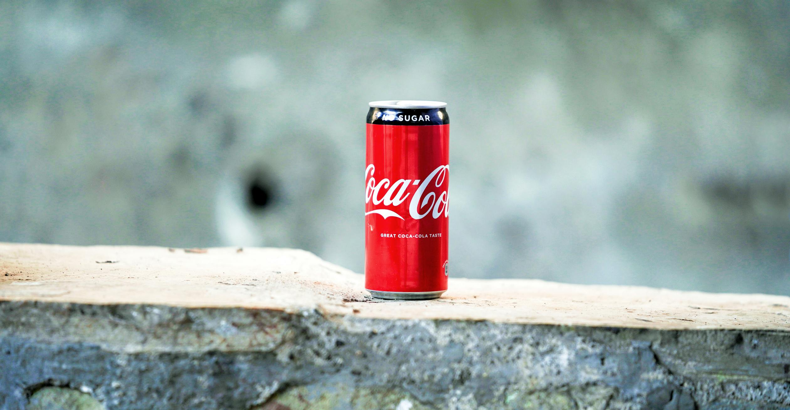

Sejarah
 Cocacola diciptakan pada tanggal 8 mei 1886 oleh Dr. John Pemberton di Atlanta,Georgia,Amerika Serikat.
Awalnya minuman ini dibuat sebagai obat untuk sakit kepala dan masalah penecernaan.
Pemberton menjual resep Coca-cola kepada seorang pengusaha bernama Asa Candler. Candler kemudian memperkenalkan
minuman ini ke pasar yang lebih luas dan mendirikan The Coca-Cola Company pada tahun 1892.
Ekspansi Global Coca-cola mulai pada tahun 1899 diekspor ke luar Amerika Serikat, Ekspansi internasional yang pesat
dimulai pada tahun 1900-an, dengan pembukaan pabrik-pabrik dan pemasaran yang agresif di seluruh dunia.
Dimana saat itu Coca-cola menjadi minuman yang dikemas dalam botol kaca, yang membantu memperluas distribusinya
secara signifikan. Cocacola telah menjadi simbol budaya populer di seluruh dunia. Kampanye iklannya dan kampanye iklan cetak
telah menjadi ikonik dan mendefenisikan budaya pop di berbagai era. Selain cocacola clasic
perusahaan juga telah mengembangkan berbagai varian produk lainnya, seperti diet coke,Coca-cola zero, dan varian lainnya
untuk memenuhi preferensi konsumen. Coca-cola Company telah berkontribusi pada keberlanjutan lingkungan dan mendukung berbagai
inisiatif sosial di seluruh dunia.
Perusahaan Multinasional
.png)
Perusahaan Multinasional The Coca-Cola Company memiliki kantor pusatnya di Atlanta,Georgia,Amerika Serikat
Perusahaan ini memiliki banyak sekali fasilitas produksi dan kantor cabang di seluruh dunia.
Perusahaan Cocacola Indonesia
.png)
Salah satu cabang perusahaan The Coca-Cola Company ialah Coca-Cola Europacific Partners Indonesia atau bisa disingkat CCEP Indonesia.
adalah salah satu perusahaan produsen Coca-cola terbesar di dunia yang berada di Indonesia, CCEP Indonesia
berfokus pada produksi,distribusi, dan pemasaran berbagai merek minuman non-alkohol lainya, termasuk fanta,sprite dan lainnya
di pasar Indonesia.